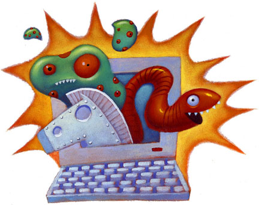

Es importante a la hora de usar cualquier sistema informático preocuparse por la seguridad del mismo, pensando en amenazas tanto internas como externas. La mayoría de los usuarios piensan que con un buen antivirus es suficiente para mantener a raya virus, gusanos y otros programas malintencionados. Pero es importante conocer además la existencia de otras herramientas que pueden reforzar la seguridad de su equipo.
Antes de ver estas herramientas de protección es importante conocer los diferentes tipos de malware que nos podemos encontrar.
Un malware es un tipo de software malintencionado que tiene como objetivo infiltrarse o dañar un sistema informático o de información sin el consentimiento de su propietario. Dentro del malware podemos distinguir los siguientes tipo o variantes:
- Malware infeccioso: este término no se refiere al tipo de daño que provoca este malware, sino a la forma en que se propaga. El virus (que suele usarse para referirse al malware en general) se caracteriza por ejecutarse sin que el usuario se percate y por infectar a otros programas del sistema. El gusano es similar pero se caracteriza porque, una vez que entra en el sistema, se propaga de forma automática sin intervención del usuario. En ambos casos, lo habitual es que intenten dañar el equipo.
- Malware oculto: este término se refiere a la capacidad del malware para pasar inadevertido no sólo en el momento de la infección, sino también posteriormente. En esta categoría se incluyen tipos más concretos del malware como el troyano (que se hace pasar por un programa común e inocuo), la puerta trasera o backdoor (que permite el acceso remoto al equipo por parte de usuarios no autorizados), la descarga no permitida (como su propio mombre indica, la infección se produce a través de una descarga en un sitio web) o el rootkit (parte del malware que hace una serie de ajustes en el equipo para que éste sea incapaz de detectar la parte del malware que tiene la función exclusivamente dañina).
- Malware publicitario: como su propio nombre indica, estos tipos tipos de malware se aprovechan de la publicidad online para lograr la infección. Aquí se incluyen el adware (el más genérico de todos, que se produce a través de supuestos anuncios en páginas web), la ventana emergente (una variante del anterior, cuya peculiaridad consiste en recurrir al formato pop-up: abrir una nueva ventana con supuesta publicidad) y el spam (a través del correo electrónico).
- Malware espía: el daño de este tipo de malware consiste en recolectar datos privados del usuario cuyo uso no autorizado repercute en un perjuicio para éste (normalmente económico). Aquí se engloban el spyware (el más genérico de todos), el keylogger (centrado en la introducción de datos por teclado físico o virtual, especialmente a la hora de escribir contraseñas) o el stealer (suele buscar el mismo tipo de datos que el anterior, pero buscando en registros y cachés en lugar de siguiendo la actividad del usuario en tiempo real).
- Otros: la lista es amplísima, pero pueden destacarse el dialer (que realiza marcaciones a números telefónicos de alta tarificación sin que el usuario se percate), el exploit (que se aprovecha de vulnerabilidades del sistema) o el phishing (centrado en la recolección de datos bancarios del usuario).